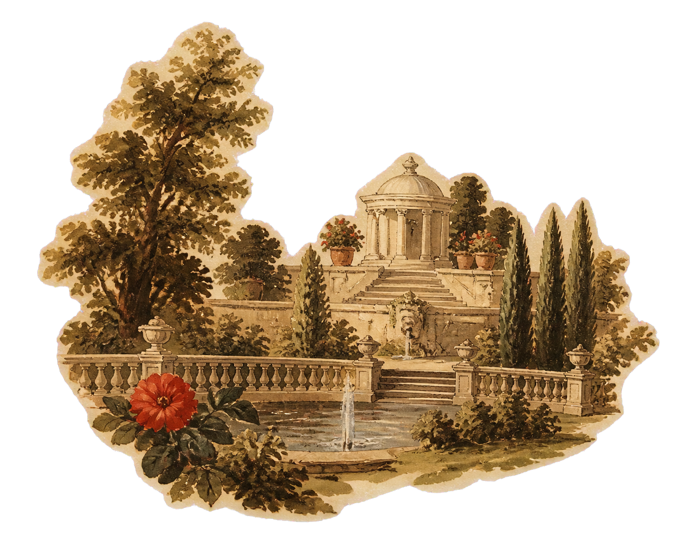
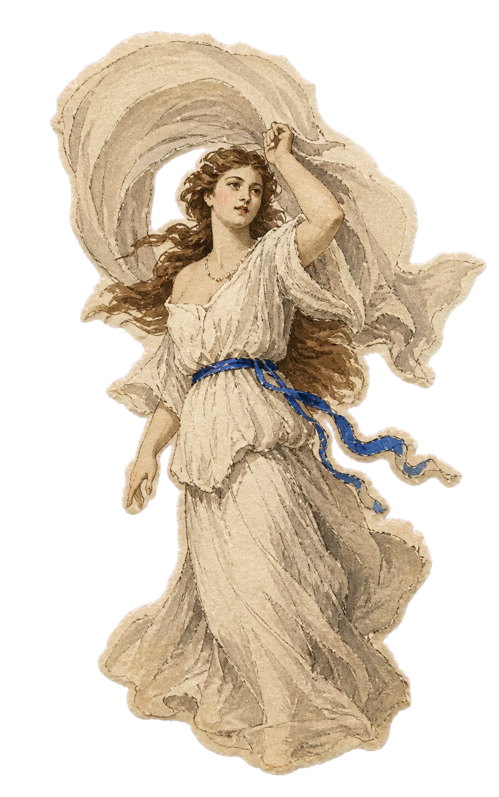
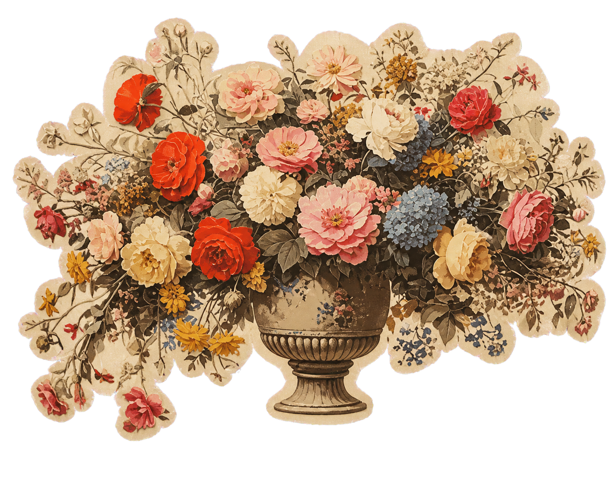
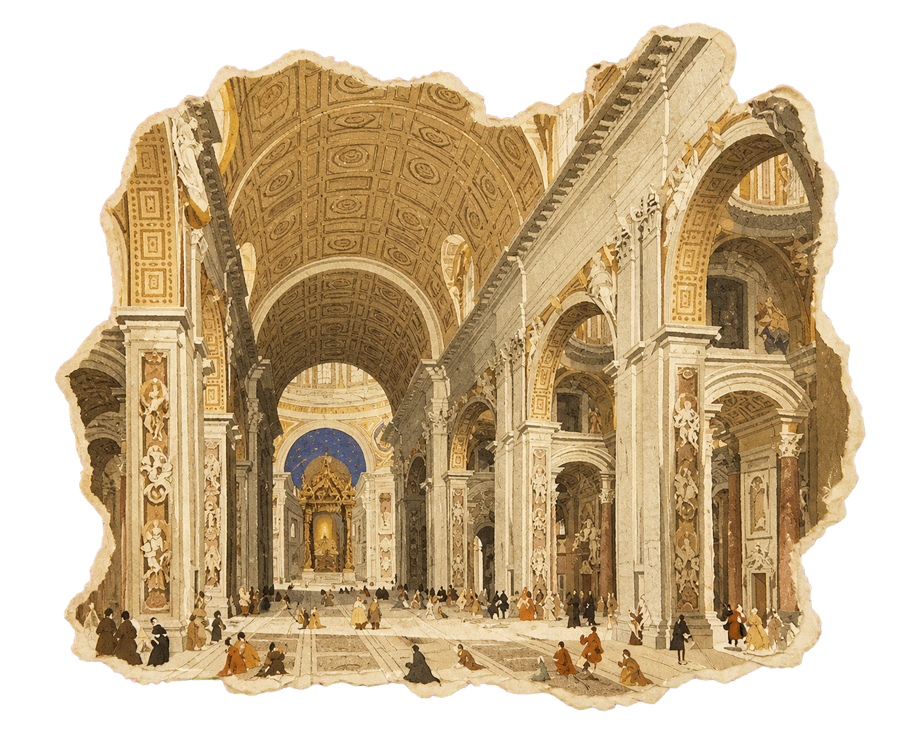

Ⅲ
Old knowledge / new instruments
Classical patience.
Computational reach.
We believe enduring research resembles classical craft: attentive observation, proportion, revision and a respect for what cannot be rushed.


Our proposition
Technology should deepen
judgement—not replace it.
The machine widens the field of view. Human discipline decides what deserves attention, what survives scrutiny and what should remain untouched.
IV / ARS & SCIENTIA
Enduring research resembles classical craft: attentive observation, proportion, revision and respect for what cannot be rushed.

